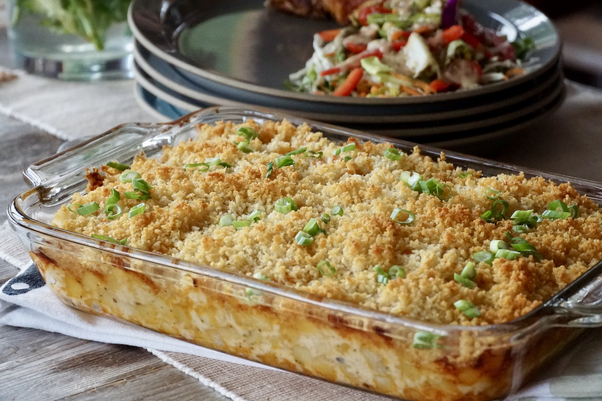

Potato "Crap"

Description
Classic potato casserole like "funeral potatoes."
Ingredients
- 1 Package Hash Browns
- 2 T. butter, melted
- 1 Can Cream of Chicken Soup
- 1 c. Milk
- 1 c. Sour Cream
- 1 c. Sharp Cheddar Cheese
- 1 T. Minced Onoin (dried)
- 1 1/2 Cups Corn Flake Crumbs
- 1/3 Cup Parmesan Cheese (the cheap stuff)
Steps
- In 9 x 13 pan, layer hash browns (about 1/3 up pan--uses a whole small bag of hash browns or part of bigger bag.
- Melt 2 T. butter and pour over top
- Mix together soup, milk, sour cream, cheese, and onions (optional).
- Pour over top.
- Mix crumbs, butter and parmesan cheese together
- Put on top.
- Bake at 350 for 30 minutes.